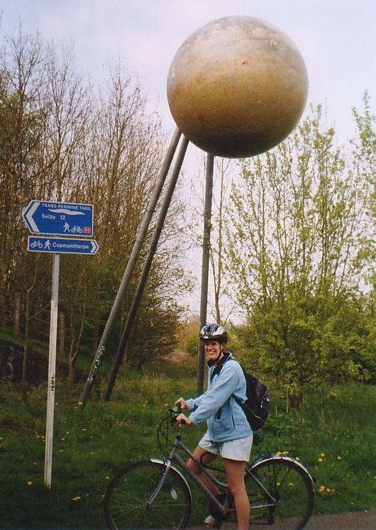
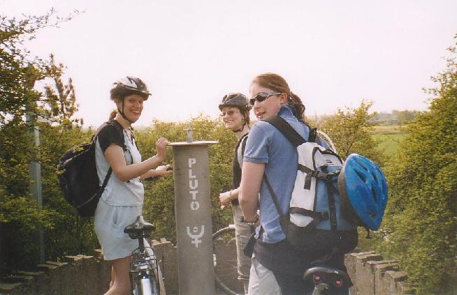
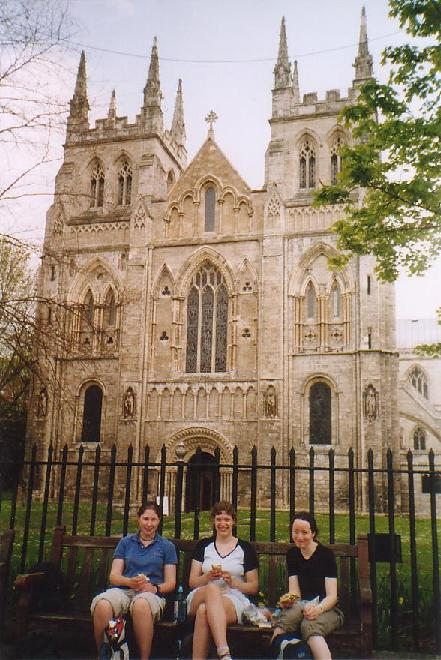

Emma, Caroline and Rosie

Emma

Emma, Rosie and Caroline

Caroline, Emme and Rosie
With thanks to Char for the pictures
The Solar System Cycle path was built, and is maintained by, the University of York. More details can be found on their website www.solar.york.ac.uk